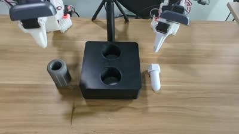
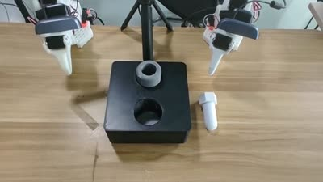
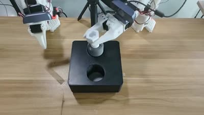
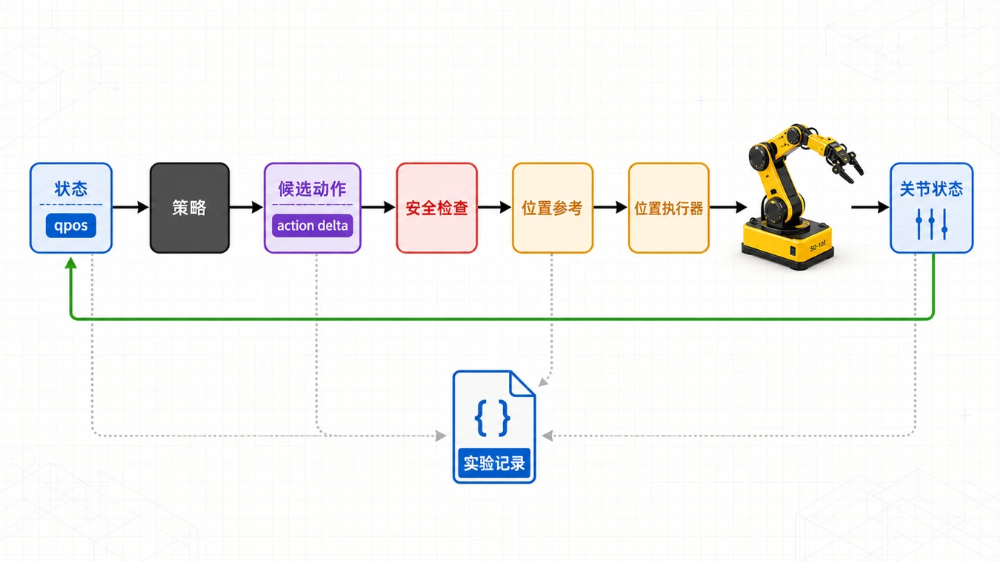
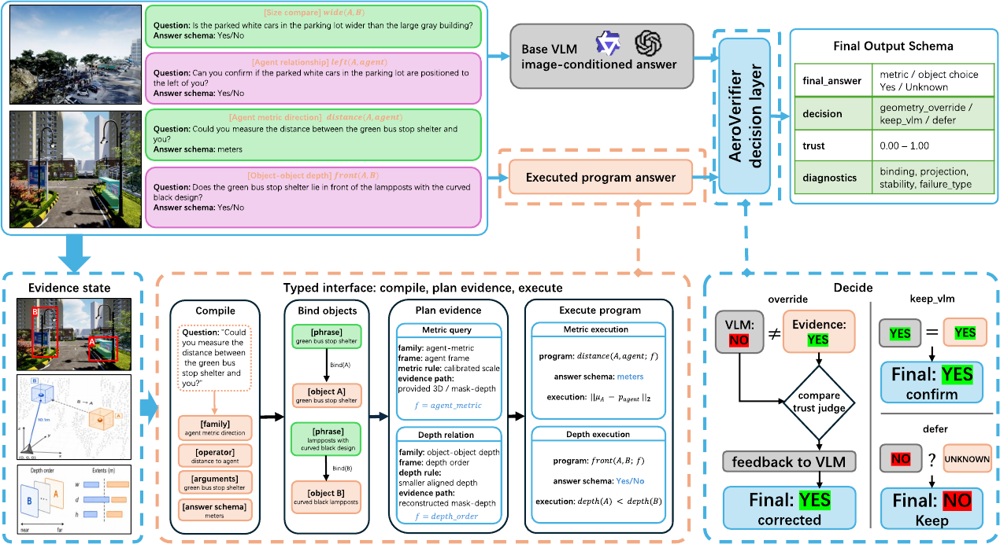
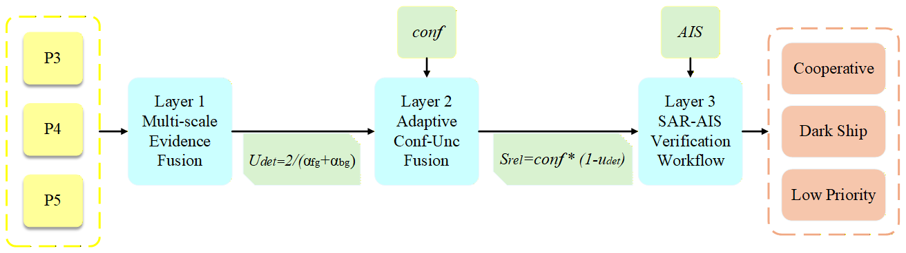
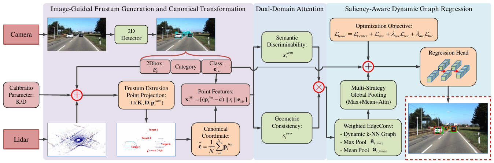
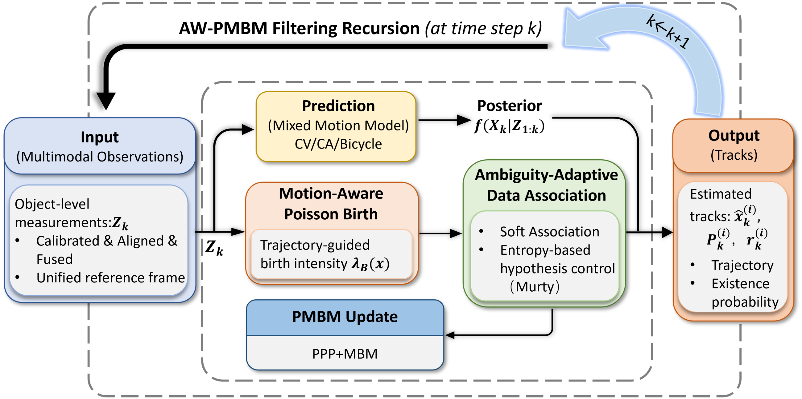
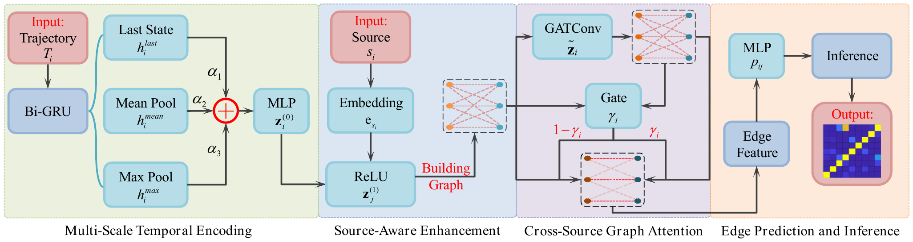

机器人学习 / 具身智能
我来自中国，目前就读于电子科技大学信息与通信工程学院。我的研究关注多传感器感知与机器人学习，从融合相机和激光雷达数据做三维检测，到在仿真和真实机械臂上评测操作策略。
我把实验复现的步骤和遇到的问题写进技术博客，也参与编写 Xbotics 具身智能手册。平时用 Python、Linux 和 Docker 做实验，也使用 Java 和 Bash。



| 任务集 | 官方权重 | 全量微调 |
|---|---|---|
| Spatial | 98.2% | 98.4% |
| Object | 98.8% | 98.4% |
| Goal | 96.8% | 96.8% |
| LIBERO-10 | 92.6% | 91.8% |
| 平均 | 96.60% | 96.35% |
我与 Xbotics 社区一起编写具身智能教程，参与了第 3 讲「机器人本体与控制基础」和第 4 讲「传感器与感知基础」。这两讲串起了两个实操问题：机器人怎样执行策略给出的动作，又怎样在不同坐标系里理解传感器观测？

Jinfeng Chen, Mengfan Yang, Jianyu Zhu, Zhicheng Zhou, Jing Liang
把航拍空间问题编译成带类型的程序，在物体级三维证据上执行，再把答案和逐阶段诊断反馈给视觉语言模型。

Jinfeng Chen, Zhicheng Zhou, Tianye Yu, Jing Liang
雷达图像里的海杂波可能被误判为船只。RASAV 为检测结果估计可靠性，再与船舶自动识别系统（AIS）记录核对，帮助审核人员优先检查可靠且没有匹配记录的候选。

Zhicheng Zhou, Tianye Yu, Jinfeng Chen, Jing Liang
DGNNF 从图像中的二维检测框划定激光点云的三维候选区域，再结合物体类别与几何信息为点分配权重。动态图网络利用这些点及其邻域关系估计三维检测框。

Tianye Yu, Zhicheng Zhou, Jinfeng Chen, Jing Liang
车辆被遮挡时，跟踪器容易丢失已有轨迹。AW-PMBM 利用预测运动轨迹保留目标假设，并按观测关联的歧义程度调整计算量。论文在 KITTI 城市交通序列上评估了轨迹连续性。

Zhicheng Zhou, Tianye Yu, Jinfeng Chen, Jing Liang
不同传感器的采样频率和测量偏差各异，同一物体可能留下形态不同的轨迹。HGTA 提取每段轨迹的短时动作和整体趋势，再通过跨传感器图注意力比较运动特征，估计两段轨迹来自同一物体的概率。

从风险定义、轨迹数据和闭环分布出发，区分过拟合、分布偏移、目标不一致与控制接口问题，并设计能区分这些解释的实验。
梳理具身强化学习的数据来源、学习机制、动作接口、真实部署与 VLA 后训练方法。
梳理 Physical Intelligence 系列模型如何表示动作、利用记忆和从经验中学习，并追踪策略从训练到真机执行的过程。
从策略网络和训练数据流讲到机器人部署，比较 skrl、rl_games 和 RSL-RL 各自适合的训练场景。
记录在共享 A800 集群上复现官方权重的命令、评测协议与常见问题。四组任务共运行 2,000 次，平均成功率为 96.60%。